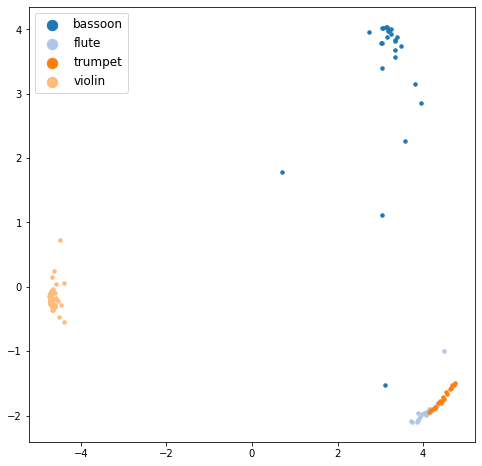
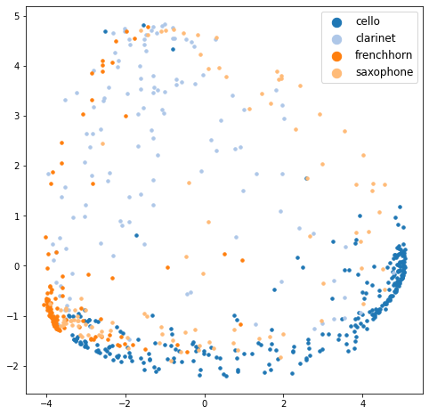
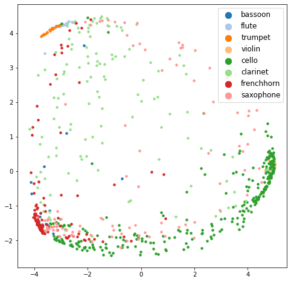
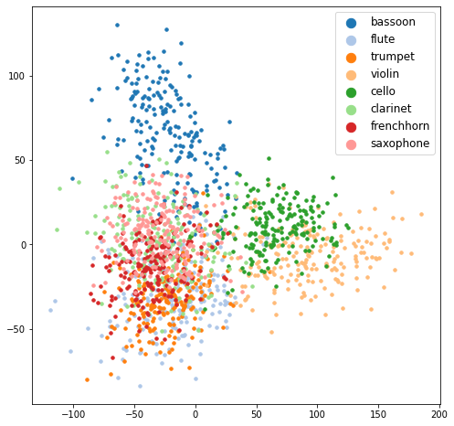
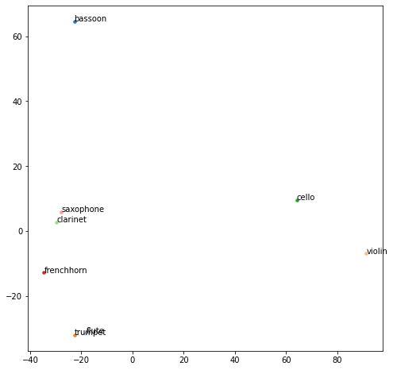

Image-audio ZSL evaluation
Contents
Image-audio ZSL evaluation#
To evaluate our trained model, we first construct the model and load the saved weights.
1. Load the trained model#
from zsl.model import ImageAudioSiameseNetwork
from zsl.loss import TripletLoss
from zsl.dataset import ImageAudioDataset
from zsl.data_prep import prepare_zsl_split_img_audio
from zsl.transforms import get_transforms
from zsl.model_manager import ModelManager
from zsl.utils import *
import torch
import torch.optim as optim
from torch.utils.data import DataLoader
from torch.optim.lr_scheduler import ReduceLROnPlateau
from collections import defaultdict
from tqdm import tqdm
import numpy as np
import pandas as pd
device = torch.device("cuda:0" if torch.cuda.is_available() else "cpu")
siamese_network = ImageAudioSiameseNetwork().to(device)
triplet_loss = TripletLoss(0.5).to(device)
img_transforms, mel_transform = get_transforms()
optimizer_siamese = optim.Adam(siamese_network.parameters(), lr=0.01)
exp_lr_scheduler = ReduceLROnPlateau(
optimizer_siamese,
mode='min',
factor=0.2,
patience=5,
verbose=True
)
curr_model = ModelManager(
siamese_network,
triplet_loss,
optimizer_siamese,
exp_lr_scheduler,
device
)
curr_model.load_model('./checkpoints/img_audio_221128/w_ep-00195_l-0.0908.pth')
Loading model done: ./checkpoints/img_audio_221128/w_ep-00195_l-0.0908.pth
2. Prepare our data splits#
(
seen_img_classes,
seen_img_path,
seen_img_label,
seen_audio_X_train,
seen_audio_y_train,
seen_audio_X_test,
seen_audio_y_test,
unseen_img_classes,
unseen_img_path,
unseen_img_label,
unseen_audio_X_train,
unseen_audio_y_train,
unseen_audio_X_test,
unseen_audio_y_test,
) = prepare_zsl_split_img_audio()
3. Seen class prediction (supervised learning)#
3-1) Prepare the audio and image data from the seen classes.#
seen_img_audio_dataset_tr = ImageAudioDataset(
audio_path_list = seen_audio_X_train,
audio_label_list = seen_audio_y_train,
img_path_list = seen_img_path,
img_label_list = seen_img_label,
img_class_list = seen_img_classes,
audio_transform = mel_transform,
img_transform = img_transforms['test']
)
seen_img_audio_dataset_ts = ImageAudioDataset(
audio_path_list = seen_audio_X_test,
audio_label_list = seen_audio_y_test,
img_path_list = seen_img_path,
img_label_list = seen_img_label,
img_class_list = seen_img_classes,
audio_transform = mel_transform,
img_transform = img_transforms['test']
)
seen_img_audio_dataloaders = {}
seen_img_audio_dataloaders['train'] = DataLoader(
seen_img_audio_dataset_tr,
batch_size=16,
num_workers=8,
shuffle=False
)
seen_img_audio_dataloaders['test'] = DataLoader(
seen_img_audio_dataset_ts,
batch_size=16,
num_workers=8,
shuffle=False
)
3-2) Compute the audio embeddings using ZSL model#
(
seen_ts_audio_embs,
seen_random_img_embs,
seen_ts_labels,
seen_ts_loss
) = curr_model.infer_all(seen_img_audio_dataloaders, 'test')
100%|█████████████████████████████████████████████████████████████████████████████████████████████████████| 124/124 [00:11<00:00, 11.00it/s]
test Loss: 0.1437
3-3) Compute all image embeddings from seen class images using ZSL model#
from PIL import Image
from collections import defaultdict
import torch.nn as nn
seen_all_img_embs = []
for i in tqdm(range(len(seen_img_path))):
_img = img_transforms['test'](Image.open(seen_img_path[i])).unsqueeze(0).to(device)
_img = nn.Sigmoid()(curr_model.model.visual_model(_img))
_img = torch.squeeze(_img, dim=-1)
_img = torch.squeeze(_img, dim=-1)
_img = curr_model.model.visual_projection(_img)
seen_all_img_embs.append(_img.squeeze().detach().cpu().numpy())
100%|█████████████████████████████████████████████████████████████████████████████████████████████████████| 800/800 [00:15<00:00, 51.99it/s]
3-4) Compute the mean image embedding vector for each class#
Unlike the previous word-audio experiment, we need to get the mean embedding vector from images of a certain class.
seen_class_to_img_embs = defaultdict(list)
for i in tqdm(range(len(seen_all_img_embs))):
seen_class_to_img_embs[seen_img_label[i]].append(seen_all_img_embs[i])
seen_class_to_mean_img_emb = {}
for _c in seen_class_to_img_embs:
seen_class_to_mean_img_emb[_c] = np.mean(seen_class_to_img_embs[_c], axis=0)
100%|████████████████████████████████████████████████████████████████████████████████████████████████| 800/800 [00:00<00:00, 1007035.77it/s]
3-5) Evaluate the test set audio on seen classes (supervised learning evaluation)#
correct = 0
for idx in range(seen_ts_audio_embs.shape[0]):
curr_pred_indices, _ = nearest_neighbor_clf_k(np.expand_dims(seen_ts_audio_embs[idx], 0),
seen_class_to_mean_img_emb,
seen_img_classes,
1)
if seen_ts_labels[idx] in curr_pred_indices:
correct += 1
print('Top-1 acc :', correct / seen_ts_audio_embs.shape[0])
Top-1 acc : 0.8064516129032258
draw_pca(seen_ts_audio_embs, seen_ts_labels, seen_img_classes)

4. Unseen class prediction#
4-1) Prepare the audio and image data from the unseen classes.#
unseen_audio_X = unseen_audio_X_train + unseen_audio_X_test
unseen_audio_y = unseen_audio_y_train + unseen_audio_y_test
unseen_img_audio_dataset = ImageAudioDataset(
audio_path_list = unseen_audio_X,
audio_label_list = unseen_audio_y,
img_path_list = unseen_img_path,
img_label_list = unseen_img_label,
img_class_list = unseen_img_classes,
audio_transform = mel_transform,
img_transform = img_transforms['test']
)
unseen_img_audio_dataloaders = {}
unseen_img_audio_dataloaders['all'] = DataLoader(
unseen_img_audio_dataset,
batch_size=16,
num_workers=8,
shuffle=False
)
4-2) Compute the audio embeddings using ZSL model#
(
unseen_audio_embs,
unseen_random_img_embs,
unseen_labels,
unseen_loss
) = curr_model.infer_all(unseen_img_audio_dataloaders, 'all')
100%|█████████████████████████████████████████████████████████████████████████████████████████████████████| 650/650 [00:59<00:00, 10.91it/s]
all Loss: 0.3540
4-3) Compute the image embeddings using ZSL model#
unseen_all_img_embs = []
for i in tqdm(range(len(unseen_img_path))):
_img = img_transforms['test'](Image.open(unseen_img_path[i])).unsqueeze(0).to(device)
_img = nn.Sigmoid()(curr_model.model.visual_model(_img))
_img = torch.squeeze(_img, dim=-1)
_img = torch.squeeze(_img, dim=-1)
_img = curr_model.model.visual_projection(_img)
unseen_all_img_embs.append(_img.squeeze().detach().cpu().numpy())
100%|█████████████████████████████████████████████████████████████████████████████████████████████████████| 800/800 [00:15<00:00, 52.09it/s]
4-4) Compute the mean image embedding vector for each class#
unseen_class_to_img_embs = defaultdict(list)
for i in tqdm(range(len(unseen_all_img_embs))):
unseen_class_to_img_embs[unseen_img_label[i]].append(unseen_all_img_embs[i])
unseen_class_to_mean_img_emb = {}
for _c in unseen_class_to_img_embs:
unseen_class_to_mean_img_emb[_c] = np.mean(unseen_class_to_img_embs[_c], axis=0)
100%|█████████████████████████████████████████████████████████████████████████████████████████████████| 800/800 [00:00<00:00, 617036.26it/s]
4-5) Evaluate the audio on unseen classes (zero-shot evaluation)#
correct = 0
for idx in range(unseen_audio_embs.shape[0]):
curr_pred_indices, _ = nearest_neighbor_clf_k(np.expand_dims(unseen_audio_embs[idx], 0),
unseen_class_to_mean_img_emb,
unseen_img_classes,
1)
if unseen_labels[idx] in curr_pred_indices:
correct += 1
print('Top-1 acc :', correct / unseen_audio_embs.shape[0])
Top-1 acc : 0.4153846153846154
draw_pca(unseen_audio_embs, unseen_labels, unseen_img_classes)

5. Generalized ZSL evaluation#
5-1) Concatenate the seen and unseen classes#
all_img_classes = seen_img_classes + unseen_img_classes
5-2) Prepare the audio embeddings, the image embeddings and their labels#
added_unseen_labels = [_n + 4 for _n in unseen_labels]
added_unseen_img_label = [_n + 4 for _n in unseen_img_label]
all_img_embs = np.concatenate([seen_all_img_embs, unseen_all_img_embs])
# all_ts_audio_embs = np.concatenate([seen_ts_audio_embs, unseen_ts_audio_embs])
# all_img_embs = np.concatenate([seen_all_img_embs, unseen_all_img_embs])
# all_img_label = seen_img_label + added_unseen_img_label
# added_unseen_ts_labels = [_n + 4 for _n in unseen_ts_labels]
# added_unseen_img_label = [_n + 4 for _n in unseen_img_label]
# all_ts_labels = seen_ts_labels + added_unseen_ts_labels
5-3) Compute the mean image embedding vector for each class#
all_class_to_mean_img_emb = {}
for _c, _emb in seen_class_to_mean_img_emb.items():
all_class_to_mean_img_emb[_c] = _emb
for _c, _emb in unseen_class_to_mean_img_emb.items():
all_class_to_mean_img_emb[_c+4] = _emb
5-4) Evaluate the test set audio on seen + unseen classes (generalized zero-shot evaluation)#
correct = 0
for idx in range(unseen_audio_embs.shape[0]):
curr_pred_indices, _ = nearest_neighbor_clf_k(np.expand_dims(unseen_audio_embs[idx], 0),
all_class_to_mean_img_emb,
all_img_classes,
1)
if added_unseen_labels[idx] in curr_pred_indices:
correct += 1
print('Top-1 acc :', correct / unseen_audio_embs.shape[0])
Top-1 acc : 0.08
6. Visualize#
test set seen class audio + whole set unseen class audio
seen + unseen classes
all_audio_embs = np.concatenate([seen_ts_audio_embs, unseen_audio_embs])
all_labels = seen_ts_labels + added_unseen_labels
draw_pca(all_audio_embs, all_labels, all_img_classes)

Looking into the mean image embeddings#
How are the image embeddings formulated?
draw_pca(all_img_embs, all_img_label, all_img_classes)

all_img_mean_embs, all_img_mean_label = [], []
for _c in sorted(list(all_class_to_mean_img_emb.keys())):
all_img_mean_embs.append(all_class_to_mean_img_emb[_c])
all_img_mean_label.append(_c)
draw_pca_with_class(all_img_mean_embs, all_img_mean_label, all_img_classes)
